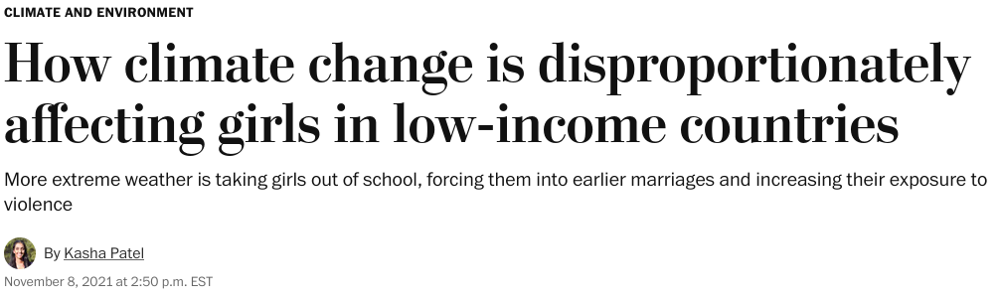

IV. What is the Future of Transnational Politics and IR?
Justin Leinaweaver (Spring 2026)
Find a current, or recent, international political event that explicitly deals with issues of gender
Before class submit to our Canvas discussion board:
The APA citation for your evidence, and
A short explanation for why this case illustrates a gender issue in international politics

What is the “event”?
Why is it “international”?
Why is it “political”?
What is the role of “gender” in this event?
What are the implications of this case for IR theory?
The Cases
What is the “event”?
Why is it “international”?
Why is it “political”?
What is the role of “gender” in this event?
What are the implications of this case for IR theory?
IR Theories
Neorealism
Offensive Realism
Bargaining Model of War
Liberal Institutionalism
Economic Liberalism
Two-Level Games
Constructivism
?
?
?
Neorealism
Offensive Realism
Bargaining Model of War
Liberal Institutionalism
Economic Liberalism
Two-Level Games
Constructivism
Read Enloe (2014)
Before class submit to our Canvas discussion board: